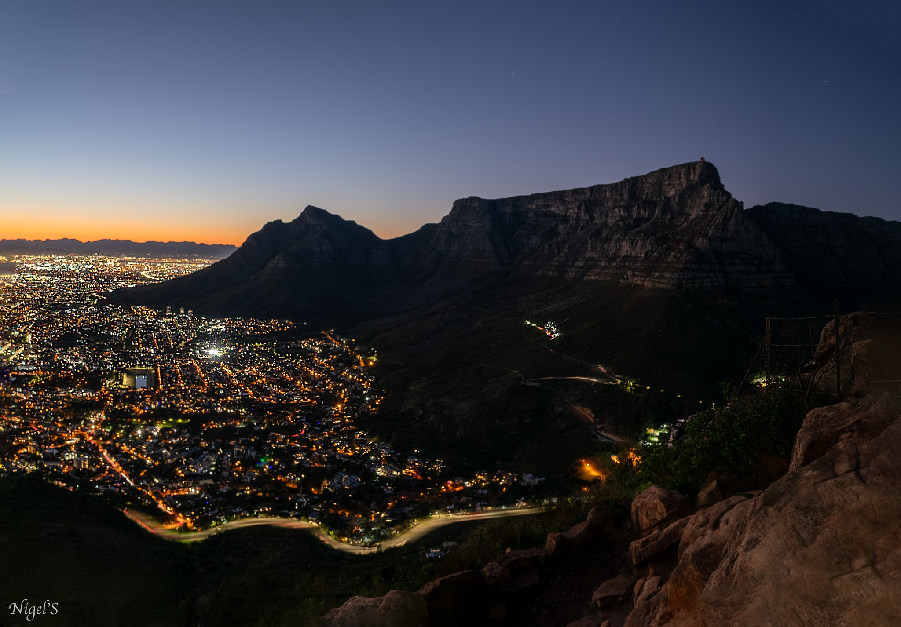
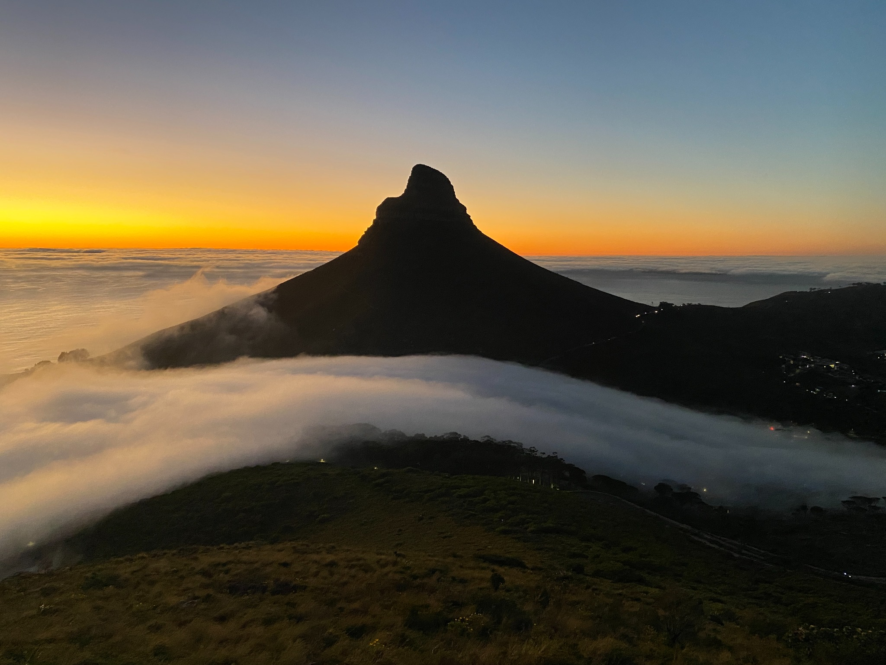

If you're planning to hike Lion's Head while visiting Cape Town, one of the first decisions you'll probably face is whether to go at sunrise or sunset.
Having experienced Lion's Head at both times many times as a local hiking guide, my answer is simple: there isn't a bad choice.
Sunrise and sunset show you two completely different sides of the same mountain.
One starts beneath the city lights and finishes with Cape Town waking up around you. The other starts in daylight and ends with the city beginning to sparkle below.
The better choice depends on what kind of experience you want — and what else you plan to do with your day.
Lion's Head at Sunrise
Let's start with the obvious downside: you have to sacrifice some sleep.
Depending on the season, a Lion's Head sunrise hike can mean a very early start. You'll begin while Cape Town is still dark, using a headlamp for part of the ascent. But that darkness is also part of the experience.

As you climb, the lights of Cape Town stretch out below you. Slowly the horizon begins to change colour, the surrounding mountains become visible and eventually the sun arrives.
In my experience, sunrise is generally less crowded than sunset. That can make the mountain feel considerably more peaceful, particularly before the rest of Cape Town has properly started its day.
There's also an energy that's difficult to describe until you've experienced it: starting your day with exercise, fresh air and a connection with nature while watching an entire city wake up below you.
And there's another practical advantage that visitors sometimes overlook.
Once you've finished, your day has barely started.
You can hike Lion's Head, head for breakfast and still have almost an entire day available for the beach, Cape Point, the Winelands, the Waterfront or whatever else is on your Cape Town itinerary.

Lion's Head at Sunset
Sunset gives you almost the reverse journey.
Instead of beginning in darkness, you start your hike while the mountain and surrounding landscape are still illuminated.
As the afternoon progresses, the light becomes warmer and Cape Town begins changing colour around you.
Then comes sunset.
After the sun disappears, another transformation starts: the city lights come on below you.
Your descent therefore gives you something your ascent didn't — Cape Town at night.
Sunset also has one very obvious advantage over sunrise: you don't need to wake up before dawn.
For travellers who have already had a busy day exploring Cape Town — or who simply don't enjoy very early mornings — that alone can make sunset the better choice.
The trade-off is popularity. In my experience, sunset tends to attract more hikers, particularly when conditions are good.
It also occupies the latter part of your day, so you need to consider dinner reservations and evening plans.
Sunrise vs Sunset at a Glance
| Sunrise | Sunset | |
|---|---|---|
| Early wake-up | Yes | No |
| Hiking in darkness | On the way up | On the way down |
| City lights | At the beginning | At the end |
| Crowds | Generally quieter | Generally busier |
| Rest of your day | Almost completely free | Uses late afternoon/evening |
| Atmosphere | Peaceful, fresh, energising | Social, warm, dramatic |
| Best for | Early risers & busy itineraries | Travellers who prefer later starts |
Crowds and conditions vary according to season, weather, weekends and holidays.
Which Is Better for Photography?
This is one category where I wouldn't declare a winner.
Sunrise offers the transition from darkness into first light, often with Cape Town's city lights visible early in the hike.
Sunset gives you daylight views, golden-hour colours, sunset and eventually Cape Town illuminated at night.
If photography is important to you, I'd choose based on which transition you would rather experience rather than which is objectively better.
Which Is Better for Avoiding Crowds?
Sunrise generally gets my vote here.
Lion's Head is one of Cape Town's most popular hiking routes, so neither option guarantees an empty mountain.
But from my experience guiding the route, sunrise will generally give you a better chance of experiencing a quieter trail than a beautiful sunset period.
What About the Actual Hike?
Whichever time you choose, you're still hiking a mountain.
Lion's Head is a relatively short Cape Town summit hike, but it shouldn't be mistaken for a flat or effortless walk.
The route gains elevation steadily and the upper mountain becomes rockier. Depending on the line taken, hikers can encounter ladders, metal rungs and sections where hands are useful for balance and scrambling.
Comfort levels vary considerably, so pace and route choice matter.
And there's one important similarity between sunrise and sunset: part of your hike will be in darkness.
For sunrise, that's the ascent. For sunset, it's the descent. A proper headlamp is therefore something I consider essential rather than optional.
What Should You Bring?
For either experience, come prepared for mountain conditions rather than Cape Town's weather at street level.
Comfortable footwear with good grip, enough water, a warm layer, sun protection and a proper headlamp are sensible basics.
Conditions can change quickly on Cape Town's mountains, and exposed areas can feel considerably cooler and windier than the city below.
Do You Need a Guide for Lion's Head?
Not everybody who hikes Lion's Head needs a guide. Plenty of experienced locals hike it independently.
But if you're visiting Cape Town, unfamiliar with the mountain, hiking during darkness or simply want someone else to take care of timing and route decisions, a qualified local guide can add considerable value.
For me, guiding Lion's Head isn't simply about getting somebody to the summit.
It's about choosing appropriate timing, keeping an eye on conditions, helping guests through sections they're uncertain about, setting a comfortable pace — and giving visitors some context about the landscape they're experiencing.
So, Sunrise or Sunset?
If you want a quieter trail, don't mind sacrificing some sleep and love the idea of beginning your day outdoors, choose sunrise.
If you prefer a later start, want golden-hour light and like the idea of watching Cape Town transform from day into night, choose sunset.
And if you're asking me which is more beautiful?
I'd call it a draw.
Sunrise begins with Cape Town's lights and ends with a new day.
Sunset begins with the mountain in daylight and ends with the city lighting up below you.
They're different experiences — and both are worth doing.